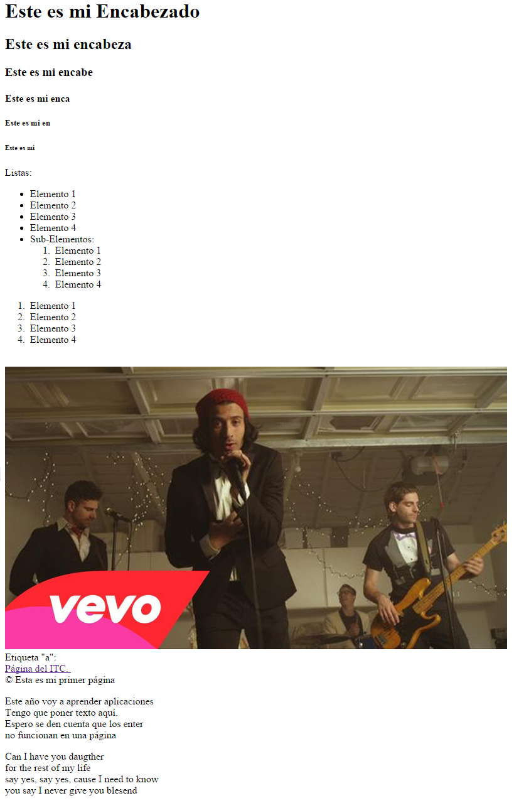
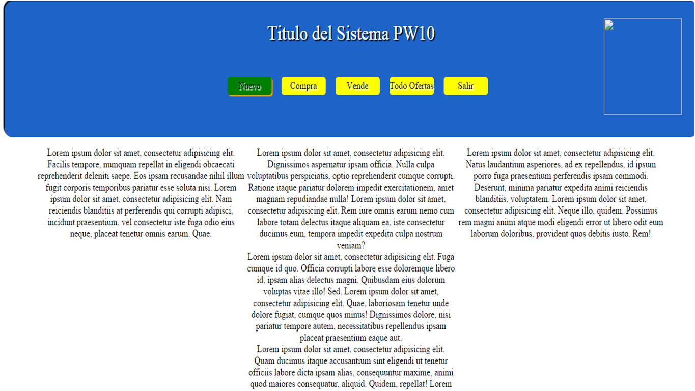

Esta pagina muestra la primera y la basica estructura de HTML 5
Segunda Actividad de HTML
La pagina que se muestra a continuacion es una pagina que elaboramos con puro texto, habia tanto texto que la pagina scrolleaba hacia abajo, por lo tanto era necesario bajar la pagina.
en esta actividad utilizamos etiquetas "a" para ir de parrafo en parrafo segun era el que escogieramos.
Tercera Actividad de HTML
En este caso solo colocamos algunos elementos, como "inputs" o tambien llamadas cajas de texto, algo de texto y unos "labels", un combobox o en html llamada "selects" y por ultimo dos botones como aun no utilizabamos java script, nada era funcional
Cuarta Actividad de HTML
Ahora nos toco la organizacion de las tablas dentro de una pagina web y la ganadora fue la pagina del TEC.
Quinta Actividad de HTML

Despues de haber aprendido el tema de como crear los links nos pasamos ala creacion de tabalas de lo cual es donde ya tenia que poner mas atencion sobre el tema de colspan
Sexta Actividad de HTML
Ahora nos toco insertar a nuestra pagina web video y audio.
Septima Actividad de HTML
Con los inputs y labels, ahora sigue armar un formulario completo sobre un curriculum vitae.
Primera Actividad de CSS
A esta pagina le dimos un poco de estilos al HTML.
con CSS3 le dimos al header un backgorund de color rosa, algunos botones, logramos colocar tres textos en linea con la propiedad inline-block, al igual que acomodamos una imagen dentro del header para que quedara como imgen del encabezado, un footer, y oviamete un titulo.
Segunda Actividad de CSS
en esta actividad se coloco un video solamente y se le dio un estilo de box shadow para ponerle sombra.
Tercera Actividad de CSS - uso Bootstrap
Utilizamos la herramienta de estilos de bootstrap para colocar botones con mejores diseños y colores, al igual qu inputs y paneles con la misma firma de bootstrap, algunas cosas quedan como predeterminadas como el font de la letra.
Cuarta Actividad de CSS
Para esta práctica se aplicaron los conocimientos adquiridos sobre las hojas de estilos de CSS y HTML. Se nos proporcionó la práctica en una imagen y se creó desde cero.
Quinta Actividad de CSS
Para esta práctica se aplicaron los conocimientos adquiridos sobre las hojas de estilos de CSS y HTML. Se nos proporcionó la práctica en una imagen y se creó desde cero.
Sexta Actividad de CSS
aqui vamos a colocar diseño a una pagina para organizar las imagenes y textos.
Examen de CSS
Este fue un examen, donde por medio de HTML y CSS organizamos toda la pagina.
Primera actividad de JS
Aqui aprendimos por primera vez a emitir alertas.
Segunda Actividad de JS
ingresando nombre en javascript
Tercera Actividad de JS
Seguimos usando JS para ahora crear una calculadora.
Primera Actividad de PHP
Aqui aprendimos a utilizae el bootstrap
Tarriba Valdez Jesus Hector.
12170884
21 años.
Masculino.
23/09/1994
Culiacan, Sinaloa.
Estudiante
Instituto Tecnologico de Mexico Campus Culiacan.
Ing. Tecnologias de la Infirmacion y Comunicaciones.
Otros estudios Primaria.
Escuela Primaria SEBEC.
Otros estudios Secundaria.
Escuela Secundario SEBEC.
Otros estudios Preparatoria.
Escuela Preparatoria COBAES.
Otros estudios Universidad.
Instututo Tecnologico de Culiacan campus culiacan.